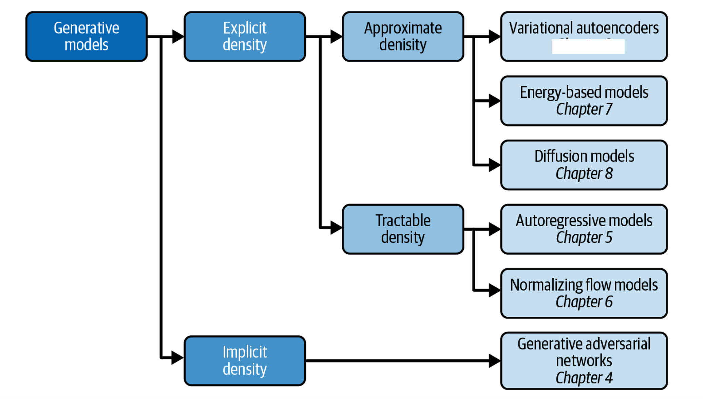

We have covered
The approaches to machine learning are many, but are often split into two main categories. In supervised learning we know the answer to a problem, and let the computer deduce the logic behind it. On the other hand, unsupervised learning is a method for finding patterns and relationship in data sets without any prior knowledge of the system.
An emerging third category is reinforcement learning. This is a paradigm of learning inspired by behavioural psychology, where learning is achieved by trial-and-error, solely from rewards and punishment.
Another way to categorize machine learning tasks is to consider the desired output of a system. Some of the most common tasks are:
Our focus has been on deep learning. But to discuss autoencoders we have also discussed PCA.
Generative modeling can be broadly defined as follows:
Generative modeling is a branch of machine learning that involves training a model to produce new data that is similar to a given dataset.
What does this mean in practice? Suppose we have a dataset containing photos of horses. We can train a generative model on this dataset to capture the rules that govern the complex relationships between pixels in images of horses. Then we can sample from this model to create novel, realistic images of horses that did not exist in the original dataset.

In order to build a generative model, we require a dataset consisting of many examples of the entity we are trying to generate. This is known as the training data, and one such data point is called an observation.
Each observation consists of many features. For an image generation problem, the features are usually the individual pixel values; for a text generation problem, the features could be individual words or groups of letters. It is our goal to build a model that can generate new sets of features that look as if they have been created using the same rules as the original data. Conceptually, for image generation this is an incredibly difficult task, considering the vast number of ways that individual pixel values can be assigned and the relatively tiny number of such arrangements that constitute an image of the entity we are trying to generate.
In order to truly understand what generative modeling aims to achieve and why this is important, it is useful to compare it to its counterpart, discriminative modeling. If you have studied machine learning, most problems you will have faced will have most likely been discriminative in nature.

When performing discriminative modeling, each observation in the training data has a label. For a binary classification problem such as our data could be labeled as ones and zeros. Our model then learns how to discriminate between these two groups and outputs the probability that a new observation has label 1 or 0
In contrast, generative modeling doesn’t require the dataset to be labeled because it concerns itself with generating entirely new data (for example an image), rather than trying to predict a label for say a given image.

All three books have GitHub sites from where one can download all codes. A good and more general text (2016) is Goodfellow, Bengio and Courville, Deep Learning
Neural networks, in its so-called feed-forward form, where each iterations contains a feed-forward stage and a back-propgagation stage, consist of series of affine matrix-matrix and matrix-vector multiplications. The unknown parameters (the so-called biases and weights which deternine the architecture of a neural network), are uptaded iteratively using the so-called back-propagation algorithm. This algorithm corresponds to the so-called reverse mode of the automatic differentation algorithm. These algorithms will be discussed in more detail below.
We start however first with the definitions of the various variables which make up a neural network.
The architecture of a neural network defines our model. This model aims at describing some function \( f(\boldsymbol{x} \) which aims at describing some final result (outputs or tagrget values) given a specific inpput \( \boldsymbol{x} \). Note that here \( \boldsymbol{y} \) and \( \boldsymbol{x} \) are not limited to be vectors.
The architecture consists of

The cost function is a function of the unknown parameters \( \boldsymbol{\Theta} \) where the latter is a container for all possible parameters needed to define a neural network
If we are dealing with a regression task a typical cost/loss function is the mean squared error
$$ C(\boldsymbol{\Theta})=\frac{1}{n}\left\{\left(\boldsymbol{y}-\boldsymbol{X}\boldsymbol{\theta}\right)^T\left(\boldsymbol{y}-\boldsymbol{X}\boldsymbol{\theta}\right)\right\}. $$This function represents one of many possible ways to define the so-called cost function.
For neural networks the parameters \( \boldsymbol{\Theta} \) are given by the so-called weights and biases (to be defined below).
The weights are given by matrix elements \( w_{ij}^{(l)} \) where the superscript indicates the layer number. The biases are typically given by vector elements representing each single node of a given layer, that is \( b_j^{(l)} \).
Having defined the architecture of a neural network, the optimization of the cost function with respect to the parameters \( \boldsymbol{\Theta} \), involves the calculations of gradients and their optimization. The gradients represent the derivatives of a multidimensional object and are often approximated by various gradient methods, including
In addition to the above, there are often additional hyperparamaters which are included in the setup of a neural network. These will be discussed below.
According to the Universal approximation theorem, a feed-forward neural network with just a single hidden layer containing a finite number of neurons can approximate a continuous multidimensional function to arbitrary accuracy, assuming the activation function for the hidden layer is a non-constant, bounded and monotonically-increasing continuous function.
The universal approximation theorem plays a central role in deep learning. Cybenko (1989) showed the following:
Let \( \sigma \) be any continuous sigmoidal function such that
$$ \sigma(z) = \left\{\begin{array}{cc} 1 & z\rightarrow \infty\\ 0 & z \rightarrow -\infty \end{array}\right. $$Given a continuous and deterministic function \( F(\boldsymbol{x}) \) on the unit cube in \( d \)-dimensions \( F\in [0,1]^d \), \( x\in [0,1]^d \) and a parameter \( \epsilon >0 \), there is a one-layer (hidden) neural network \( f(\boldsymbol{x};\boldsymbol{\Theta}) \) with \( \boldsymbol{\Theta}=(\boldsymbol{W},\boldsymbol{b}) \) and \( \boldsymbol{W}\in \mathbb{R}^{m\times n} \) and \( \boldsymbol{b}\in \mathbb{R}^{n} \), for which
$$ \vert F(\boldsymbol{x})-f(\boldsymbol{x};\boldsymbol{\Theta})\vert < \epsilon \hspace{0.1cm} \forall \boldsymbol{x}\in[0,1]^d. $$Any continuous function \( y=F(\boldsymbol{x}) \) supported on the unit cube in \( d \)-dimensions can be approximated by a one-layer sigmoidal network to arbitrary accuracy.
Hornik (1991) extended the theorem by letting any non-constant, bounded activation function to be included using that the expectation value
$$ \mathbb{E}[\vert F(\boldsymbol{x})\vert^2] =\int_{\boldsymbol{x}\in D} \vert F(\boldsymbol{x})\vert^2p(\boldsymbol{x})d\boldsymbol{x} < \infty. $$Then we have
$$ \mathbb{E}[\vert F(\boldsymbol{x})-f(\boldsymbol{x};\boldsymbol{\Theta})\vert^2] =\int_{\boldsymbol{x}\in D} \vert F(\boldsymbol{x})-f(\boldsymbol{x};\boldsymbol{\Theta})\vert^2p(\boldsymbol{x})d\boldsymbol{x} < \epsilon. $$None of the proofs give any insight into the relation between the number of of hidden layers and nodes and the approximation error \( \epsilon \), nor the magnitudes of \( \boldsymbol{W} \) and \( \boldsymbol{b} \).
Neural networks (NNs) have what we may call a kind of universality no matter what function we want to compute.
It does not mean that an NN can be used to exactly compute any function. Rather, we get an approximation that is as good as we want.
The class of functions that can be approximated are the continuous ones. If the function \( F(\boldsymbol{x}) \) is discontinuous, it won't in general be possible to approximate it. However, an NN may still give an approximation even if we fail in some points.
For an OO-code in Python for a feed-forward NN, see https://github.com/CompPhysics/AdvancedMachineLearning/blob/main/doc/pub/NNpart5code/ipynb/NNpart5code.ipynb
The aim of generative methods is to train a probability distribution \( p \). The methods we will focus on are:
We define a probability
$$ p(x_i,h_j;\boldsymbol{\Theta}) = \frac{f(x_i,h_j;\boldsymbol{\Theta})}{Z(\boldsymbol{\Theta})}, $$where \( f(x_i,h_j;\boldsymbol{\Theta}) \) is a function which we assume is larger or equal than zero and obeys all properties required for a probability distribution and \( Z(\boldsymbol{\Theta}) \) is a normalization constant. Inspired by statistical mechanics, we call it often for the partition function. It is defined as (assuming that we have discrete probability distributions)
$$ Z(\boldsymbol{\Theta})=\sum_{x_i\in \boldsymbol{X}}\sum_{h_j\in \boldsymbol{H}} f(x_i,h_j;\boldsymbol{\Theta}). $$We can in turn define the marginal probabilities
$$ p(x_i;\boldsymbol{\Theta}) = \frac{\sum_{h_j\in \boldsymbol{H}}f(x_i,h_j;\boldsymbol{\Theta})}{Z(\boldsymbol{\Theta})}, $$and
$$ p(h_i;\boldsymbol{\Theta}) = \frac{\sum_{x_i\in \boldsymbol{X}}f(x_i,h_j;\boldsymbol{\Theta})}{Z(\boldsymbol{\Theta})}. $$Note the change to a vector notation. A variable like \( \boldsymbol{x} \) represents now a specific configuration. We can generate an infinity of such configurations. The final partition function is then the sum over all such possible configurations, that is
$$ Z(\boldsymbol{\Theta})=\sum_{x_i\in \boldsymbol{X}}\sum_{h_j\in \boldsymbol{H}} f(x_i,h_j;\boldsymbol{\Theta}), $$changes to
$$ Z(\boldsymbol{\Theta})=\sum_{\boldsymbol{x}}\sum_{\boldsymbol{h}} f(\boldsymbol{x},\boldsymbol{h};\boldsymbol{\Theta}). $$If we have a binary set of variable \( x_i \) and \( h_j \) and \( M \) values of \( x_i \) and \( N \) values of \( h_j \) we have in total \( 2^M \) and \( 2^N \) possible \( \boldsymbol{x} \) and \( \boldsymbol{h} \) configurations, respectively.
We see that even for the modest binary case, we can easily approach a number of configuration which is not possible to deal with.
At the end, we are not interested in the probabilities of the hidden variables. The probability we thus want to optimize is
$$ p(\boldsymbol{X};\boldsymbol{\Theta})=\prod_{x_i\in \boldsymbol{X}}p(x_i;\boldsymbol{\Theta})=\prod_{x_i\in \boldsymbol{X}}\left(\frac{\sum_{h_j\in \boldsymbol{H}}f(x_i,h_j;\boldsymbol{\Theta})}{Z(\boldsymbol{\Theta})}\right), $$which we rewrite as
$$ p(\boldsymbol{X};\boldsymbol{\Theta})=\frac{1}{Z(\boldsymbol{\Theta})}\prod_{x_i\in \boldsymbol{X}}\left(\sum_{h_j\in \boldsymbol{H}}f(x_i,h_j;\boldsymbol{\Theta})\right). $$We simplify further by rewriting it as
$$ p(\boldsymbol{X};\boldsymbol{\Theta})=\frac{1}{Z(\boldsymbol{\Theta})}\prod_{x_i\in \boldsymbol{X}}f(x_i;\boldsymbol{\Theta}), $$where we used \( p(x_i;\boldsymbol{\Theta}) = \sum_{h_j\in \boldsymbol{H}}f(x_i,h_j;\boldsymbol{\Theta}) \). The optimization problem is then
$$ {\displaystyle \mathrm{arg} \hspace{0.1cm}\max_{\boldsymbol{\boldsymbol{\Theta}}\in {\mathbb{R}}^{p}}} \hspace{0.1cm}p(\boldsymbol{X};\boldsymbol{\Theta}). $$Computing the derivatives with respect to the parameters \( \boldsymbol{\Theta} \) is easier (and equivalent) with taking the logarithm of the probability. We will thus optimize
$$ {\displaystyle \mathrm{arg} \hspace{0.1cm}\max_{\boldsymbol{\boldsymbol{\Theta}}\in {\mathbb{R}}^{p}}} \hspace{0.1cm}\log{p(\boldsymbol{X};\boldsymbol{\Theta})}, $$which leads to
$$ \nabla_{\boldsymbol{\Theta}}\log{p(\boldsymbol{X};\boldsymbol{\Theta})}=0. $$This leads to the following equation
$$ \nabla_{\boldsymbol{\Theta}}\log{p(\boldsymbol{X};\boldsymbol{\Theta})}=\nabla_{\boldsymbol{\Theta}}\left(\sum_{x_i\in \boldsymbol{X}}\log{f(x_i;\boldsymbol{\Theta})}\right)-\nabla_{\boldsymbol{\Theta}}\log{Z(\boldsymbol{\Theta})}=0. $$The first term is called the positive phase and we assume that we have a model for the function \( f \) from which we can sample values. Below we will develop an explicit model for this. The second term is called the negative phase and is the one which leads to more difficulties.
The partition function, defined above as
$$ Z(\boldsymbol{\Theta})=\sum_{x_i\in \boldsymbol{X}}\sum_{h_j\in \boldsymbol{H}} f(x_i,h_j;\boldsymbol{\Theta}), $$is in general the most problematic term. In principle both \( x \) and \( h \) can span large degrees of freedom, if not even infinitely many ones, and computing the partition function itself is often not desirable or even feasible. The above derivative of the partition function can however be written in terms of an expectation value which is in turn evaluated using Monte Carlo sampling and the theory of Markov chains, popularly shortened to MCMC (or just MC$^2$).
We can rewrite
$$ \nabla_{\boldsymbol{\Theta}}\log{Z(\boldsymbol{\Theta})}=\frac{\nabla_{\boldsymbol{\Theta}}Z(\boldsymbol{\Theta})}{Z(\boldsymbol{\Theta})}, $$which reads in more detail
$$ \nabla_{\boldsymbol{\Theta}}\log{Z(\boldsymbol{\Theta})}=\frac{\nabla_{\boldsymbol{\Theta}} \sum_{x_i\in \boldsymbol{X}}f(x_i;\boldsymbol{\Theta}) }{Z(\boldsymbol{\Theta})}. $$We can rewrite the function \( f \) (we have assumed that is larger or equal than zero) as \( f=\exp{\log{f}} \). We can then rewrite the last equation as
$$ \nabla_{\boldsymbol{\Theta}}\log{Z(\boldsymbol{\Theta})}=\frac{ \sum_{x_i\in \boldsymbol{X}} \nabla_{\boldsymbol{\Theta}}\exp{\log{f(x_i;\boldsymbol{\Theta})}} }{Z(\boldsymbol{\Theta})}. $$Taking the derivative gives us
$$ \nabla_{\boldsymbol{\Theta}}\log{Z(\boldsymbol{\Theta})}=\frac{ \sum_{x_i\in \boldsymbol{X}}f(x_i;\boldsymbol{\Theta}) \nabla_{\boldsymbol{\Theta}}\log{f(x_i;\boldsymbol{\Theta})} }{Z(\boldsymbol{\Theta})}, $$which is the expectation value of \( \log{f} \)
$$ \nabla_{\boldsymbol{\Theta}}\log{Z(\boldsymbol{\Theta})}=\sum_{x_i\sim p}p(x_i;\boldsymbol{\Theta}) \nabla_{\boldsymbol{\Theta}}\log{f(x_i;\boldsymbol{\Theta})}, $$that is
$$ \nabla_{\boldsymbol{\Theta}}\log{Z(\boldsymbol{\Theta})}=\mathbb{E}(\log{f(x_i;\boldsymbol{\Theta})}). $$This quantity is evaluated using Monte Carlo sampling, with Gibbs sampling as the standard sampling rule.
This leads to the following equation
$$ \nabla_{\boldsymbol{\Theta}}\log{p(\boldsymbol{X};\boldsymbol{\Theta})}=\nabla_{\boldsymbol{\Theta}}\left(\sum_{x_i\in \boldsymbol{X}}\log{f(x_i;\boldsymbol{\Theta})}\right)-\mathbb{E}_{x\sim p}(\log{f(x_i;\boldsymbol{\Theta})})=0. $$As we will see below, a typical Boltzmann machines employs a probability distribution
$$ p(\boldsymbol{x},\boldsymbol{h};\boldsymbol{\Theta}) = \frac{f(\boldsymbol{x},\boldsymbol{h};\boldsymbol{\Theta})}{Z(\boldsymbol{\Theta})}, $$where \( f(\boldsymbol{x},\boldsymbol{h};\boldsymbol{\Theta}) \) is given by a so-called energy model. If we assume that the random variables \( x_i \) and \( h_j \) take binary values only, for example \( x_i,h_j=\{0,1\} \), we have a so-called binary-binary model where
$$ f(\boldsymbol{x},\boldsymbol{h};\boldsymbol{\Theta})=-E(\boldsymbol{x}, \boldsymbol{h};\boldsymbol{\Theta}) = \sum_{x_i\in \boldsymbol{X}} x_i a_i+\sum_{h_j\in \boldsymbol{H}} b_j h_j + \sum_{x_i\in \boldsymbol{X},h_j\in\boldsymbol{H}} x_i w_{ij} h_j, $$where the set of parameters are given by the biases and weights \( \boldsymbol{\Theta}=\{\boldsymbol{a},\boldsymbol{b},\boldsymbol{W}\} \). Note the vector notation instead of \( x_i \) and \( h_j \) for \( f \). The vectors \( \boldsymbol{x} \) and \( \boldsymbol{h} \) represent a specific instance of stochastic variables \( x_i \) and \( h_j \). These arrangements of \( \boldsymbol{x} \) and \( \boldsymbol{h} \) lead to a specific energy configuration.
With the above definition we can write the probability as
$$ p(\boldsymbol{x},\boldsymbol{h};\boldsymbol{\Theta}) = \frac{\exp{(\boldsymbol{a}^T\boldsymbol{x}+\boldsymbol{b}^T\boldsymbol{h}+\boldsymbol{x}^T\boldsymbol{W}\boldsymbol{h})}}{Z(\boldsymbol{\Theta})}, $$where the biases \( \boldsymbol{a} \) and \( \boldsymbol{h} \) and the weights defined by the matrix \( \boldsymbol{W} \) are the parameters we need to optimize.
Since the binary-binary energy model is linear in the parameters \( a_i \), \( b_j \) and \( w_{ij} \), it is easy to see that the derivatives with respect to the various optimization parameters yield expressions used in the evaluation of gradients like
$$ \frac{\partial E(\boldsymbol{x}, \boldsymbol{h};\boldsymbol{\Theta})}{\partial w_{ij}}=-x_ih_j, $$and
$$ \frac{\partial E(\boldsymbol{x}, \boldsymbol{h};\boldsymbol{\Theta})}{\partial a_i}=-x_i, $$and
$$ \frac{\partial E(\boldsymbol{x}, \boldsymbol{h};\boldsymbol{\Theta})}{\partial b_j}=-h_j. $$The function \( E(\boldsymbol{x},\boldsymbol{h},\boldsymbol{\Theta}) \) gives the energy of a configuration (pair of vectors) \( (\boldsymbol{x}, \boldsymbol{h}) \). The lower the energy of a configuration, the higher the probability of it. This function also depends on the parameters \( \boldsymbol{a} \), \( \boldsymbol{b} \) and \( W \). Thus, when we adjust them during the learning procedure, we are adjusting the energy function to best fit our problem.
There are different variants of RBMs, and the differences lie in the types of visible and hidden units we choose as well as in the implementation of the energy function \( E(\boldsymbol{x},\boldsymbol{h},\boldsymbol{\Theta}) \). The connection between the nodes in the two layers is given by the weights \( w_{ij} \).
RBMs were first developed using binary units in both the visible and hidden layer. The corresponding energy function is defined as follows:
$$ \begin{align*} E(\boldsymbol{x}, \boldsymbol{h},\boldsymbol{\Theta}) = - \sum_i^M x_i a_i- \sum_j^N b_j h_j - \sum_{i,j}^{M,N} x_i w_{ij} h_j, \end{align*} $$where the binary values taken on by the nodes are most commonly 0 and 1.
Another varient is the RBM where the visible units are Gaussian while the hidden units remain binary:
$$ \begin{align*} E(\boldsymbol{x}, \boldsymbol{h},\boldsymbol{\Theta}) = \sum_i^M \frac{(x_i - a_i)^2}{2\sigma_i^2} - \sum_j^N b_j h_j - \sum_{i,j}^{M,N} \frac{x_i w_{ij} h_j}{\sigma_i^2}. \end{align*} $$This type of RBMs are useful when we model continuous data (i.e., we wish \( \boldsymbol{x} \) to be continuous). The paramater \( \sigma_i^2 \) is meant to represent a variance and is foten just set to one.
import numpy as np
import torch
import torch.utils.data
import torch.nn as nn
import torch.nn.functional as F
import torch.optim as optim
from torch.autograd import Variable
from torchvision import datasets, transforms
from torchvision.utils import make_grid , save_image
import matplotlib.pyplot as plt
batch_size = 64
train_loader = torch.utils.data.DataLoader(
datasets.MNIST('./data',
train=True,
download = True,
transform = transforms.Compose(
[transforms.ToTensor()])
),
batch_size=batch_size
)
test_loader = torch.utils.data.DataLoader(
datasets.MNIST('./data',
train=False,
transform=transforms.Compose(
[transforms.ToTensor()])
),
batch_size=batch_size)
class RBM(nn.Module):
def __init__(self,
n_vis=784,
n_hin=500,
k=5):
super(RBM, self).__init__()
self.W = nn.Parameter(torch.randn(n_hin,n_vis)*1e-2)
self.v_bias = nn.Parameter(torch.zeros(n_vis))
self.h_bias = nn.Parameter(torch.zeros(n_hin))
self.k = k
def sample_from_p(self,p):
return F.relu(torch.sign(p - Variable(torch.rand(p.size()))))
def v_to_h(self,v):
p_h = F.sigmoid(F.linear(v,self.W,self.h_bias))
sample_h = self.sample_from_p(p_h)
return p_h,sample_h
def h_to_v(self,h):
p_v = F.sigmoid(F.linear(h,self.W.t(),self.v_bias))
sample_v = self.sample_from_p(p_v)
return p_v,sample_v
def forward(self,v):
pre_h1,h1 = self.v_to_h(v)
h_ = h1
for _ in range(self.k):
pre_v_,v_ = self.h_to_v(h_)
pre_h_,h_ = self.v_to_h(v_)
return v,v_
def free_energy(self,v):
vbias_term = v.mv(self.v_bias)
wx_b = F.linear(v,self.W,self.h_bias)
hidden_term = wx_b.exp().add(1).log().sum(1)
return (-hidden_term - vbias_term).mean()
rbm = RBM(k=1)
train_op = optim.SGD(rbm.parameters(),0.1)
for epoch in range(10):
loss_ = []
for _, (data,target) in enumerate(train_loader):
data = Variable(data.view(-1,784))
sample_data = data.bernoulli()
v,v1 = rbm(sample_data)
loss = rbm.free_energy(v) - rbm.free_energy(v1)
loss_.append(loss.data)
train_op.zero_grad()
loss.backward()
train_op.step()
print("Training loss for {} epoch: {}".format(epoch, np.mean(loss_)))
def show_adn_save(file_name,img):
npimg = np.transpose(img.numpy(),(1,2,0))
f = "./%s.png" % file_name
plt.imshow(npimg)
plt.imsave(f,npimg)
show_adn_save("real",make_grid(v.view(32,1,28,28).data))
show_adn_save("generate",make_grid(v1.view(32,1,28,28).data))
See discussions in Foster, chapter 7 on energy-based models at https://github.com/davidADSP/Generative_Deep_Learning_2nd_Edition/tree/main/notebooks/07_ebm/01_ebm
That notebook is based on a recent article by Du and Mordatch, Implicit generation and modeling with energy-based models, see https://arxiv.org/pdf/1903.08689.pdf.
Before we continue, we need to remind ourselves about the Kullback-Leibler divergence introduced earlier. These metrics are useful for quantifying the similarity between two probability distributions.
The Kullback–Leibler (KL) divergence, labeled \( D_{KL} \), measures how one probability distribution \( p \) diverges from a second expected probability distribution \( q \), that is
$$ D_{KL}(p \| q) = \int_x p(x) \log \frac{p(x)}{q(x)} dx. $$The KL-divegernce \( D_{KL} \) achieves the minimum zero when \( p(x) == q(x) \) everywhere.
Mathematically, we can imagine the latent variables and the data we observe as modeled by a joint distribution \( p(\boldsymbol{x}, \boldsymbol{h};\boldsymbol{\Theta}) \). Recall one approach of generative modeling, termed likelihood-based, is to learn a model to maximize the likelihood \( p(\boldsymbol{x};\boldsymbol{\Theta}) \) of all observed \( \boldsymbol{x} \). There are two ways we can manipulate this joint distribution to recover the likelihood of purely our observed data \( p(\boldsymbol{x};\boldsymbol{\Theta}) \); we can explicitly marginalize out the latent variable \( \boldsymbol{h} \)
$$ \begin{equation*} p(\boldsymbol{x}) = \int p(\boldsymbol{x}, \boldsymbol{h})d\boldsymbol{h} \end{equation*} $$or, we could also appeal to the chain rule of probability
$$ \begin{equation*} p(\boldsymbol{x}) = \frac{p(\boldsymbol{x}, \boldsymbol{h})}{p(\boldsymbol{h}|\boldsymbol{x})} \end{equation*} $$We suppress here the dependence on the optimization parameters \( \boldsymbol{\Theta} \).
Here, \( q_{\boldsymbol{\phi}}(\boldsymbol{h}|\boldsymbol{x}) \) is a flexible approximate variational distribution with parameters \( \boldsymbol{\phi} \) that we seek to optimize. Intuitively, it can be thought of as a parameterizable model that is learned to estimate the true distribution over latent variables for given observations \( \boldsymbol{x} \); in other words, it seeks to approximate true posterior \( p(\boldsymbol{h}|\boldsymbol{x}) \). As we saw last week when we explored Variational Autoencoders, as we increase the lower bound by tuning the parameters \( \boldsymbol{\phi} \) to maximize the ELBO, we gain access to components that can be used to model the true data distribution and sample from it, thus learning a generative model.
To better understand the relationship between the evidence and the ELBO, let us perform another derivation, this time using
$$ \begin{align*} \log p(\boldsymbol{x}) & = \log p(\boldsymbol{x}) \int q_{\boldsymbol{\phi}}(\boldsymbol{h}|\boldsymbol{x})d\boldsymbol{h} && \text{(Multiply by $1 = \int q_{\boldsymbol{\phi}}(\boldsymbol{h}|\boldsymbol{x})d\boldsymbol{h}$)}\\ & = \int q_{\boldsymbol{\phi}}(\boldsymbol{h}|\boldsymbol{x})(\log p(\boldsymbol{x}))d\boldsymbol{h} && \text{(Bring evidence into integral)}\\ & = \mathbb{E}_{q_{\boldsymbol{\phi}}(\boldsymbol{h}|\boldsymbol{x})}\left[\log p(\boldsymbol{x})\right] && \text{(Definition of Expectation)}\\ & = \mathbb{E}_{q_{\boldsymbol{\phi}}(\boldsymbol{h}|\boldsymbol{x})}\left[\log\frac{p(\boldsymbol{x}, \boldsymbol{h})}{p(\boldsymbol{h}|\boldsymbol{x})}\right]&& \\ & = \mathbb{E}_{q_{\boldsymbol{\phi}}(\boldsymbol{h}|\boldsymbol{x})}\left[\log\frac{p(\boldsymbol{x}, \boldsymbol{h})q_{\boldsymbol{\phi}}(\boldsymbol{h}|\boldsymbol{x})}{p(\boldsymbol{h}|\boldsymbol{x})q_{\boldsymbol{\phi}}(\boldsymbol{h}|\boldsymbol{x})}\right]&& \text{(Multiply by $1 = \frac{q_{\boldsymbol{\phi}}(\boldsymbol{h}|\boldsymbol{x})}{q_{\boldsymbol{\phi}}(\boldsymbol{h}|\boldsymbol{x})}$)}\\ & = \mathbb{E}_{q_{\boldsymbol{\phi}}(\boldsymbol{h}|\boldsymbol{x})}\left[\log\frac{p(\boldsymbol{x}, \boldsymbol{h})}{q_{\boldsymbol{\phi}}(\boldsymbol{h}|\boldsymbol{x})}\right] + \mathbb{E}_{q_{\boldsymbol{\phi}}(\boldsymbol{h}|\boldsymbol{x})}\left[\log\frac{q_{\boldsymbol{\phi}}(\boldsymbol{h}|\boldsymbol{x})}{p(\boldsymbol{h}|\boldsymbol{x})}\right] && \text{(Split the Expectation)}\\ & = \mathbb{E}_{q_{\boldsymbol{\phi}}(\boldsymbol{h}|\boldsymbol{x})}\left[\log\frac{p(\boldsymbol{x}, \boldsymbol{h})}{q_{\boldsymbol{\phi}}(\boldsymbol{h}|\boldsymbol{x})}\right] + D_{KL}(q_{\boldsymbol{\phi}}(\boldsymbol{h}|\boldsymbol{x})\vert\vert p(\boldsymbol{h}|\boldsymbol{x})) && \text{(Definition of KL Divergence)}\\ & \geq \mathbb{E}_{q_{\boldsymbol{\phi}}(\boldsymbol{h}|\boldsymbol{x})}\left[\log\frac{p(\boldsymbol{x}, \boldsymbol{h})}{q_{\boldsymbol{\phi}}(\boldsymbol{h}|\boldsymbol{x})}\right] && \text{(KL Divergence always $\geq 0$)} \end{align*} $$In the default formulation of the VAE by Kingma and Welling (2015), we directly maximize the ELBO. This approach is \textit{variational}, because we optimize for the best \( q_{\boldsymbol{\phi}}(\boldsymbol{h}|\boldsymbol{x}) \) amongst a family of potential posterior distributions parameterized by \( \boldsymbol{\phi} \). It is called an \textit{autoencoder} because it is reminiscent of a traditional autoencoder model, where input data is trained to predict itself after undergoing an intermediate bottlenecking representation step.
To make this connection explicit, let us dissect the ELBO term further:
$$ \begin{align*} {\mathbb{E}_{q_{\boldsymbol{\phi}}(\boldsymbol{h}|\boldsymbol{x})}\left[\log\frac{p(\boldsymbol{x}, \boldsymbol{h})}{q_{\boldsymbol{\phi}}(\boldsymbol{h}|\boldsymbol{x})}\right]} &= {\mathbb{E}_{q_{\boldsymbol{\phi}}(\boldsymbol{h}|\boldsymbol{x})}\left[\log\frac{p_{\boldsymbol{\theta}}(\boldsymbol{x}|\boldsymbol{h})p(\boldsymbol{h})}{q_{\boldsymbol{\phi}}(\boldsymbol{h}|\boldsymbol{x})}\right]} && {\text{(Chain Rule of Probability)}}\\ &= {\mathbb{E}_{q_{\boldsymbol{\phi}}(\boldsymbol{h}|\boldsymbol{x})}\left[\log p_{\boldsymbol{\theta}}(\boldsymbol{x}|\boldsymbol{h})\right] + \mathbb{E}_{q_{\boldsymbol{\phi}}(\boldsymbol{h}|\boldsymbol{x})}\left[\log\frac{p(\boldsymbol{h})}{q_{\boldsymbol{\phi}}(\boldsymbol{h}|\boldsymbol{x})}\right]} && {\text{(Split the Expectation)}}\\ &= \underbrace{{\mathbb{E}_{q_{\boldsymbol{\phi}}(\boldsymbol{h}|\boldsymbol{x})}\left[\log p_{\boldsymbol{\theta}}(\boldsymbol{x}|\boldsymbol{h})\right]}}_\text{reconstruction term} - \underbrace{{D_{KL}(q_{\boldsymbol{\phi}}(\boldsymbol{h}|\boldsymbol{x})}\vert\vert{p(\boldsymbol{h}))}}_\text{prior matching term} && {\text{(Definition of KL Divergence)}} \end{align*} $$In this case, we learn an intermediate bottlenecking distribution \( q_{\boldsymbol{\phi}}(\boldsymbol{h}|\boldsymbol{x}) \) that can be treated as an \textit{encoder}; it transforms inputs into a distribution over possible latents. Simultaneously, we learn a deterministic function \( p_{\boldsymbol{\theta}}(\boldsymbol{x}|\boldsymbol{h}) \) to convert a given latent vector \( \boldsymbol{h} \) into an observation \( \boldsymbol{x} \), which can be interpreted as a \textit{decoder}.
The two terms in the last equation each have intuitive descriptions: the first term measures the reconstruction likelihood of the decoder from our variational distribution; this ensures that the learned distribution is modeling effective latents that the original data can be regenerated from. The second term measures how similar the learned variational distribution is to a prior belief held over latent variables. Minimizing this term encourages the encoder to actually learn a distribution rather than collapse into a Dirac delta function. Maximizing the ELBO is thus equivalent to maximizing its first term and minimizing its second term.
A defining feature of the VAE is how the ELBO is optimized jointly over parameters \( \boldsymbol{\phi} \) and \( \boldsymbol{\theta} \). The encoder of the VAE is commonly chosen to model a multivariate Gaussian with diagonal covariance, and the prior is often selected to be a standard multivariate Gaussian:
$$ \begin{align*} q_{\boldsymbol{\phi}}(\boldsymbol{h}|\boldsymbol{x}) &= N(\boldsymbol{h}; \boldsymbol{\mu}_{\boldsymbol{\phi}}(\boldsymbol{x}), \boldsymbol{\sigma}_{\boldsymbol{\phi}}^2(\boldsymbol{x})\textbf{I})\\ p(\boldsymbol{h}) &= N(\boldsymbol{h}; \boldsymbol{0}, \textbf{I}) \end{align*} $$Then, the KL divergence term of the ELBO can be computed analytically, and the reconstruction term can be approximated using a Monte Carlo estimate. Our objective can then be rewritten as:
$$ \begin{align*} \mathrm{argmax}_{\boldsymbol{\phi}, \boldsymbol{\theta}} \mathbb{E}_{q_{\boldsymbol{\phi}}(\boldsymbol{h}|\boldsymbol{x})}\left[\log p_{\boldsymbol{\theta}}(\boldsymbol{x}|\boldsymbol{h})\right] - D_{KL}(q_{\boldsymbol{\phi}}(\boldsymbol{h}|\boldsymbol{x})\vert\vert p(\boldsymbol{h})) \approx \mathrm{argmax}_{\boldsymbol{\phi}, \boldsymbol{\theta}} \sum_{l=1}^{L}\log p_{\boldsymbol{\theta}}(\boldsymbol{x}|\boldsymbol{h}^{(l)}) - D_{KL}(q_{\boldsymbol{\phi}}(\boldsymbol{h}|\boldsymbol{x})\vert\vert p(\boldsymbol{h})) \end{align*} $$where latents \( \{\boldsymbol{h}^{(l)}\}_{l=1}^L \) are sampled from \( q_{\boldsymbol{\phi}}(\boldsymbol{h}|\boldsymbol{x}) \), for every observation \( \boldsymbol{x} \) in the dataset.
Diffusion models are inspired by non-equilibrium thermodynamics. They define a Markov chain of diffusion steps to slowly add random noise to data and then learn to reverse the diffusion process to construct desired data samples from the noise. Unlike VAE or flow models, diffusion models are learned with a fixed procedure and the latent variable has high dimensionality (same as the original data).
Historically, probabilistic models suffer from a tradeoff between two conflicting objectives: \textit{tractability} and \textit{flexibility}. Models that are \textit{tractable} can be analytically evaluated and easily fit to data (e.g. a Gaussian or Laplace). However, these models are unable to aptly describe structure in rich datasets. On the other hand, models that are \textit{flexible} can be molded to fit structure in arbitrary data. For example, we can define models in terms of any (non-negative) function \( \phi(\boldsymbol{x}) \) yielding the flexible distribution \( p\left(\boldsymbol{x}\right) = \frac{\phi\left(\boldsymbol{x} \right)}{Z} \), where \( Z \) is a normalization constant. However, computing this normalization constant is generally intractable. Evaluating, training, or drawing samples from such flexible models typically requires a very expensive Monte Carlo process.
Diffusion models have several interesting features
In the original formulation, one uses a Markov chain to gradually convert one distribution into another, an idea used in non-equilibrium statistical physics and sequential Monte Carlo. Diffusion models build a generative Markov chain which converts a simple known distribution (e.g. a Gaussian) into a target (data) distribution using a diffusion process. Rather than use this Markov chain to approximately evaluate a model which has been otherwise defined, one can explicitly define the probabilistic model as the endpoint of the Markov chain. Since each step in the diffusion chain has an analytically evaluable probability, the full chain can also be analytically evaluated.
Learning in this framework involves estimating small perturbations to a diffusion process. Estimating small, analytically tractable, perturbations is more tractable than explicitly describing the full distribution with a single, non-analytically-normalizable, potential function. Furthermore, since a diffusion process exists for any smooth target distribution, this method can capture data distributions of arbitrary form.
Let us go back our discussions of the variational autoencoders from last week, see https://github.com/CompPhysics/AdvancedMachineLearning/blob/main/doc/pub/week15/ipynb/week15.ipynb. As a first attempt at understanding diffusion models, we can think of these as stacked VAEs, or better, recursive VAEs.
Let us try to see why. As an intermediate step, we consider so-called hierarchical VAEs, which can be seen as a generalization of VAEs that include multiple hierarchies of latent spaces.
Note: Many of the derivations and figures here are inspired and borrowed from the excellent exposition of diffusion models by Calvin Luo at https://arxiv.org/abs/2208.11970.
Markovian VAEs represent a generative process where we use Markov chain to build a hierarchy of VAEs.
Each transition down the hierarchy is Markovian, where we decode each latent set of variables \( \boldsymbol{h}_t \) in terms of the previous latent variable \( \boldsymbol{h}_{t-1} \). Intuitively, and visually, this can be seen as simply stacking VAEs on top of each other (see figure next slide).
One can think of such a model as a recursive VAE.
Mathematically, we represent the joint distribution and the posterior of a Markovian VAE as
$$ \begin{align*} p(\boldsymbol{x}, \boldsymbol{h}_{1:T}) &= p(\boldsymbol{h}_T)p_{\boldsymbol{\theta}}(\boldsymbol{x}|\boldsymbol{h}_1)\prod_{t=2}^{T}p_{\boldsymbol{\theta}}(\boldsymbol{h}_{t-1}|\boldsymbol{h}_{t})\\ q_{\boldsymbol{\phi}}(\boldsymbol{h}_{1:T}|\boldsymbol{x}) &= q_{\boldsymbol{\phi}}(\boldsymbol{h}_1|\boldsymbol{x})\prod_{t=2}^{T}q_{\boldsymbol{\phi}}(\boldsymbol{h}_{t}|\boldsymbol{h}_{t-1}) \end{align*} $$A Markovian hierarchical Variational Autoencoder with \( T \) hierarchical latents. The generative process is modeled as a Markov chain, where each latent \( \boldsymbol{h}_t \) is generated only from the previous latent \( \boldsymbol{h}_{t+1} \). Here \( \boldsymbol{z} \) is our latent variable \( \boldsymbol{h} \).

We obtain then
$$ \begin{align*} \mathbb{E}_{q_{\boldsymbol{\phi}}(\boldsymbol{h}_{1:T}|\boldsymbol{x})}\left[\log \frac{p(\boldsymbol{x}, \boldsymbol{h}_{1:T})}{q_{\boldsymbol{\phi}}(\boldsymbol{h}_{1:T}|\boldsymbol{x})}\right] &= \mathbb{E}_{q_{\boldsymbol{\phi}}(\boldsymbol{h}_{1:T}|\boldsymbol{x})}\left[\log \frac{p(\boldsymbol{h}_T)p_{\boldsymbol{\theta}}(\boldsymbol{x}|\boldsymbol{h}_1)\prod_{t=2}^{T}p_{\boldsymbol{\theta}}(\boldsymbol{h}_{t-1}|\boldsymbol{h}_{t})}{q_{\boldsymbol{\phi}}(\boldsymbol{h}_1|\boldsymbol{x})\prod_{t=2}^{T}q_{\boldsymbol{\phi}}(\boldsymbol{h}_{t}|\boldsymbol{h}_{t-1})}\right] \end{align*} $$We will modify this equation when we discuss what are normally called Variational Diffusion Models.
The easiest way to think of a Variational Diffusion Model (VDM) is as a Markovian Hierarchical Variational Autoencoder with three key restrictions:
The VDM posterior is
$$ \begin{align*} q(\boldsymbol{x}_{1:T}|\boldsymbol{x}_0) = \prod_{t = 1}^{T}q(\boldsymbol{x}_{t}|\boldsymbol{x}_{t-1}) \end{align*} $$The distribution of each latent variable in the encoder is a Gaussian centered around its previous hierarchical latent. Here then, the structure of the encoder at each timestep \( t \) is not learned; it is fixed as a linear Gaussian model, where the mean and standard deviation can be set beforehand as hyperparameters, or learned as parameters.
We parameterize the Gaussian encoder with mean \( \boldsymbol{\mu}_t(\boldsymbol{x}_t) = \sqrt{\alpha_t} \boldsymbol{x}_{t-1} \), and variance \( \boldsymbol{\Sigma}_t(\boldsymbol{x}_t) = (1 - \alpha_t) \textbf{I} \), where the form of the coefficients are chosen such that the variance of the latent variables stay at a similar scale; in other words, the encoding process is variance-preserving.
Note that alternate Gaussian parameterizations are allowed, and lead to similar derivations. The main takeaway is that \( \alpha_t \) is a (potentially learnable) coefficient that can vary with the hierarchical depth \( t \), for flexibility.
Mathematically, the encoder transitions are defined as
$$ \begin{align*} q(\boldsymbol{x}_{t}|\boldsymbol{x}_{t-1}) = \mathcal{N}(\boldsymbol{x}_{t} ; \sqrt{\alpha_t} \boldsymbol{x}_{t-1}, (1 - \alpha_t) \textbf{I}) \label{eq:27} \end{align*} $$From the third assumption, we know that \( \alpha_t \) evolves over time according to a fixed or learnable schedule structured such that the distribution of the final latent \( p(\boldsymbol{x}_T) \) is a standard Gaussian. We can then update the joint distribution of a Markovian VAE to write the joint distribution for a VDM as
$$ \begin{align*} p(\boldsymbol{x}_{0:T}) &= p(\boldsymbol{x}_T)\prod_{t=1}^{T}p_{\boldsymbol{\theta}}(\boldsymbol{x}_{t-1}|\boldsymbol{x}_t) \\ \text{where,}&\nonumber\\ p(\boldsymbol{x}_T) &= \mathcal{N}(\boldsymbol{x}_T; \boldsymbol{0}, \textbf{I}) \end{align*} $$Collectively, what this set of assumptions describes is a steady noisification of an image input over time. We progressively corrupt an image by adding Gaussian noise until eventually it becomes completely identical to pure Gaussian noise. See figure on next slide.

Note that our encoder distributions \( q(\boldsymbol{x}_t|\boldsymbol{x}_{t-1}) \) are no longer parameterized by \( \boldsymbol{\phi} \), as they are completely modeled as Gaussians with defined mean and variance parameters at each timestep. Therefore, in a VDM, we are only interested in learning conditionals \( p_{\boldsymbol{\theta}}(\boldsymbol{x}_{t-1}|\boldsymbol{x}_{t}) \), so that we can simulate new data. After optimizing the VDM, the sampling procedure is as simple as sampling Gaussian noise from \( p(\boldsymbol{x}_T) \) and iteratively running the denoising transitions \( p_{\boldsymbol{\theta}}(\boldsymbol{x}_{t-1}|\boldsymbol{x}_{t}) \) for \( T \) steps to generate a novel \( \boldsymbol{x}_0 \).
These equations can be interpreted as

The cost of optimizing a VDM is primarily dominated by the third term, since we must optimize over all timesteps \( t \).
Under this derivation, all three terms are computed as expectations, and can therefore be approximated using Monte Carlo estimates. However, actually optimizing the ELBO using the terms we just derived might be suboptimal; because the consistency term is computed as an expectation over two random variables \( \left\{\boldsymbol{x}_{t-1}, \boldsymbol{x}_{t+1}\right\} \) for every timestep, the variance of its Monte Carlo estimate could potentially be higher than a term that is estimated using only one random variable per timestep. As it is computed by summing up \( T-1 \) consistency terms, the final estimated value may have high variance for large \( T \) values.
For more details and implementaions, see Calvin Luo at https://arxiv.org/abs/2208.11970